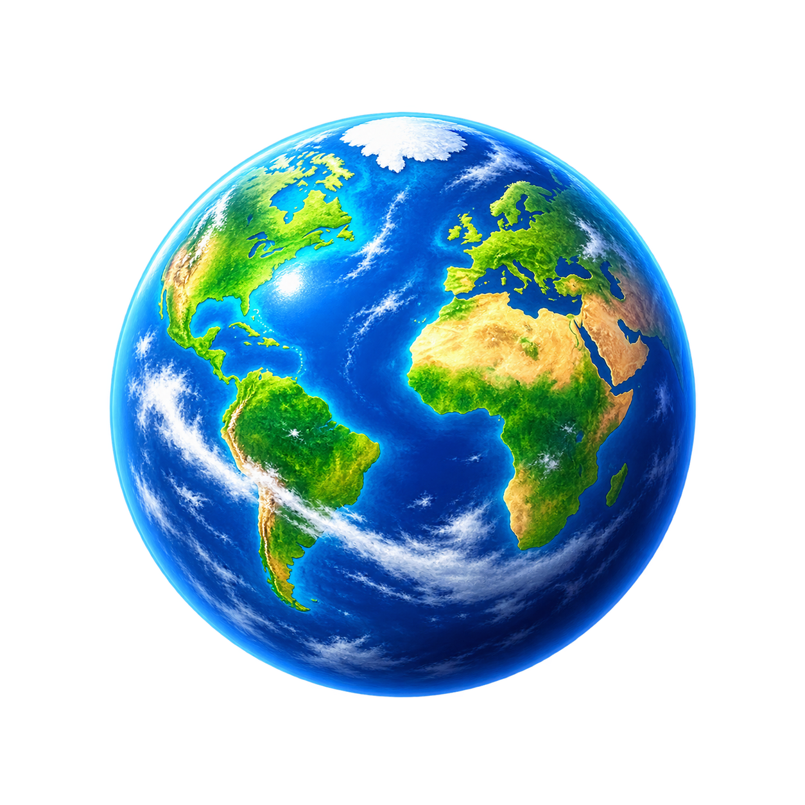

Candidate A
Pocket Blue Marble
Bright full Earth, broad Atlantic-facing land masses, polar cap, and curved cloud belt. Clearest literal choice.

PASS at 16 px. Strongest immediate Earth identity; blue, green, ochre, and white remain separated.